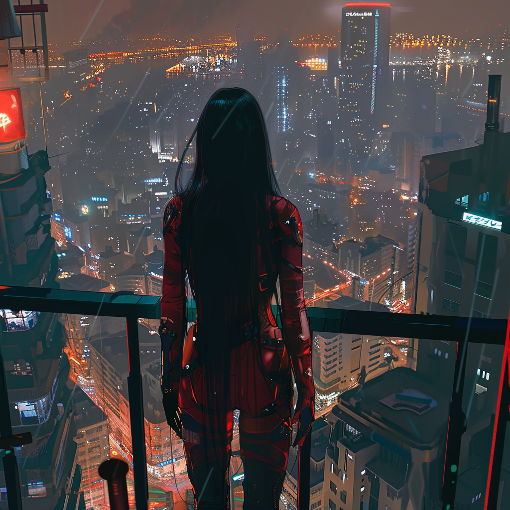

From Above and Beneath
In a world ravaged by nuclear wars and overrun by blood-thirsty mutants known as Vermin, Iveanne Orlan, masquerading as Nyco, flees the opulent but venomous world of Zenith. As heir to the powerful House Orlan, her destiny is predetermined, a mere pawn in a game of more powerful players. But Nyco seeks refuge in the Sentinel Division of the Nexar military, bonded and neurologically linked to Alias, a cybernetically enhanced human weapon called a Nighthawk. Sentinels and Nighthawks, two sides of the same coin, but a world apart.
As Nyco delves deeper into the mysteries of her past and the truth behind her existence, she finds herself entangled in a dangerous game of secrets, betrayal, and forbidden love. With the lines between friend and foe blurred, Nyco and Alias must navigate the treacherous waters of their own hearts while facing battles on two fronts: the looming threat of Vermin attacks, and the political poison seeping into the foundation of their floating city, the last bastion of civilization. It’s not only their lives at stake, but the lives of all those they hold dear.
As loyalties are tested, alliances crumble, pieces are moved into play, and Nyco and Alias find themselves in a war much bigger than they ever imagined. “From Above and Beneath” is a gripping tale of survival, love, and rebellion set against the backdrop of a technologically-advanced dystopian world that asks the question: what is the worth of a soul?